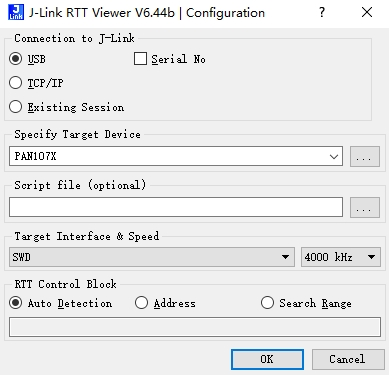
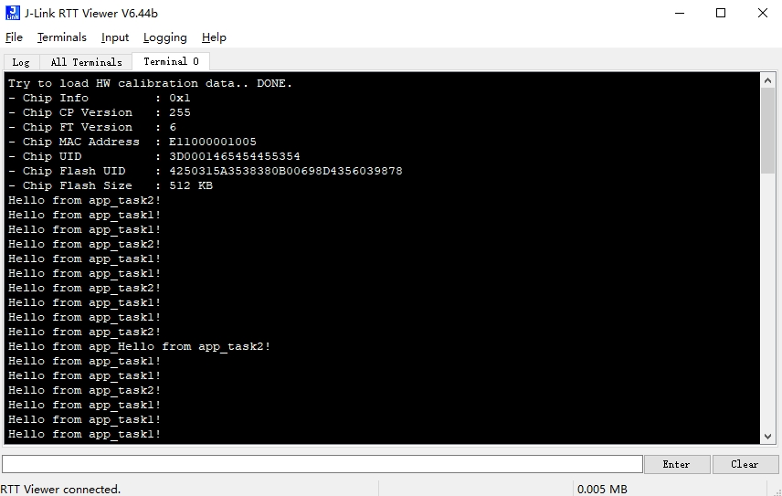
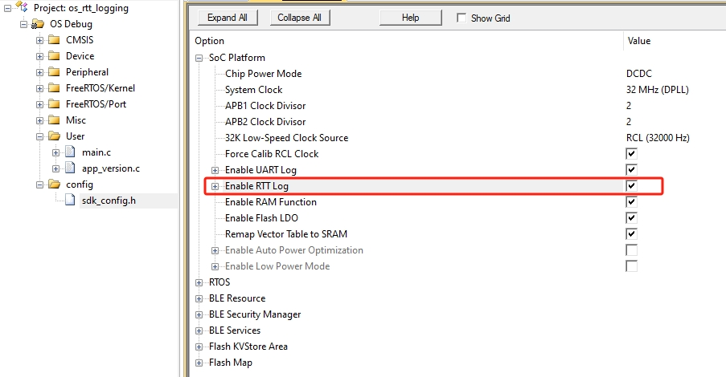

OS RTT Logging¶
1 功能概述¶
本例程演示芯片通过 Segger RTT 机制输出 Log 的方法。
2 环境准备¶
硬件设备与线材：
PAN107X EVB 核心板与底板各一块
JLink 仿真器（用于烧录例程程序）
USB-TypeC 线一条（用于底板供电和查看串口打印 Log）
杜邦线数根或跳线帽数个（用于连接各个硬件设备）
硬件接线：
将 EVB 核心板插到底板上
使用 USB-TypeC 线，将 PC USB 插口与 EVB 底板 USB->UART 插口相连
使用杜邦线将 EVB 底板上的 TX 引脚接至核心板 P16，RX 引脚接至核心板 P17
使用杜邦线将 JLink 仿真器的：
SWD_CLK 引脚与 EVB 底板的 P00 排针相连
SWD_DAT 引脚与 EVB 底板的 P01 排针相连
SWD_GND 引脚与 EVB 底板的 GND 排针相连
PC 软件:
串口调试助手（UartAssist）或终端工具（SecureCRT），波特率 921600（用于接收串口打印 Log）
Segger JLink RTT Viewer（可从 NDK 自带的 JLink 目录中找到：
<PAN10XX-NDK>\05_TOOLS\调试工具\JLink-V644b-240327\JLinkRTTViewer.exe）
3 编译和烧录¶
例程位置：<PAN10XX-NDK>\01_SDK\nimble\samples\os_debug\os_rtt_logging\keil_107x
双击 Keil Project 文件打开工程进行编译烧录。
4 例程演示说明¶
通过 Keil 将程序烧录至芯片后，可以看到芯片通过串口打印如下 Log：
Try to load HW calibration data.. DONE. - Chip Info : 0x1 - Chip CP Version : 255 - Chip FT Version : 6 - Chip MAC Address : E11000001005 - Chip UID : 3D0001465454455354 - Chip Flash UID : 4250315A3538380B00698D4356039878 - Chip Flash Size : 512 KB Hello from app_task2! Hello from app_task1! Hello from app_task1! Hello from app_task2! Hello from app_task1! Hello from app_task1! Hello from app_task2! Hello from app_task1! Hello from app_task1! Hello from app_task2! Hello from app_task1! Hello from app_task1! Hello from app_task2! Hello from app_task1! Hello from app_task1! Hello from app_task2!
此时打开 JLink RTT Viewer 软件，按照如下的参数配置，成功后点击 OK：

RTT Viewer 配置界面¶
在 RTT Viewer 主界面的 Channel0 选项卡中，可以看到与第 1 步中 UART 相同的 Log：

RTT Viewer 主界面¶
5 开发者说明¶
本工程相比与其他的普通工程（如外设例程），在配置上仅有一处改动，即将 sdk_config.h 中的 Enable RTT Log 选项勾上：

sdk_config.h 配置文件¶
将 Enable RTT Log 选项勾上后，程序中调用的
printf()，将会通过 RTT Log 的方式从 SWD 口输出到 PCEnable UART Log 与 Enable RTT Log 功能并非互斥关系，在使用过程中可以根据需要选择开启哪种 Log
注意 RTT Viewer 连接成功后，会一直通过 SWD 接口与芯片通信以获取最新 Log 数据，此时若直接点击 Keil 的烧录按钮，则可能会产生冲突导致烧录不成功，因此在重新使用 JLink 烧录之前，需关闭 RTT Viewer 软件或在 RTT Viewer 的 File 菜单中点击 Disconnet 以释放其对 SWD 接口的占用